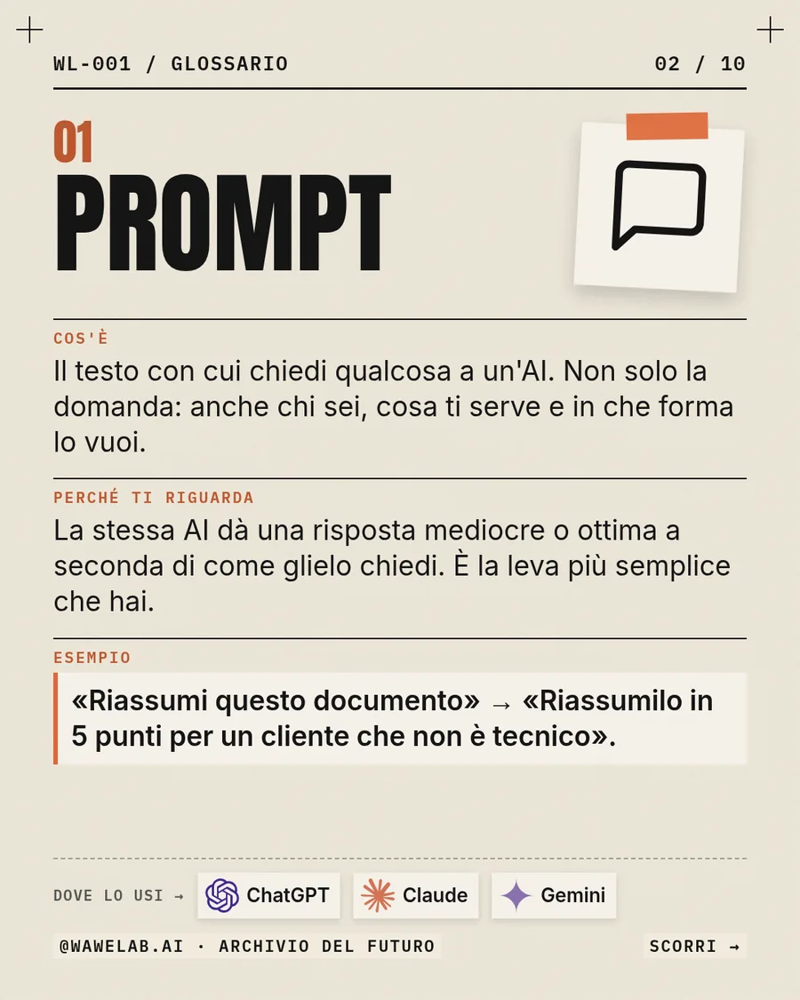
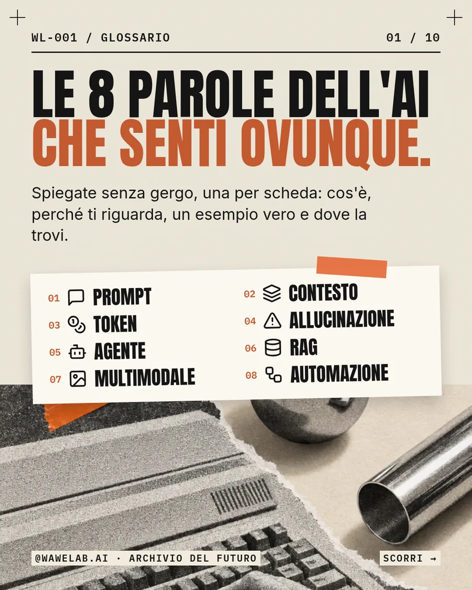
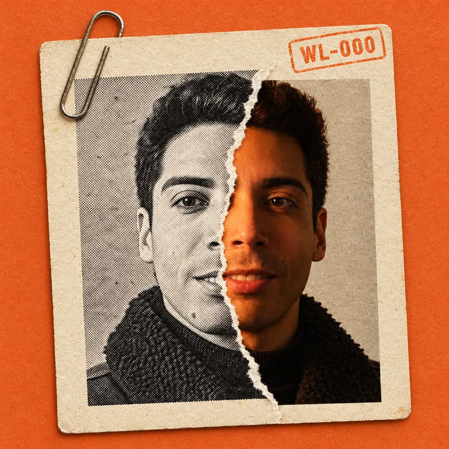
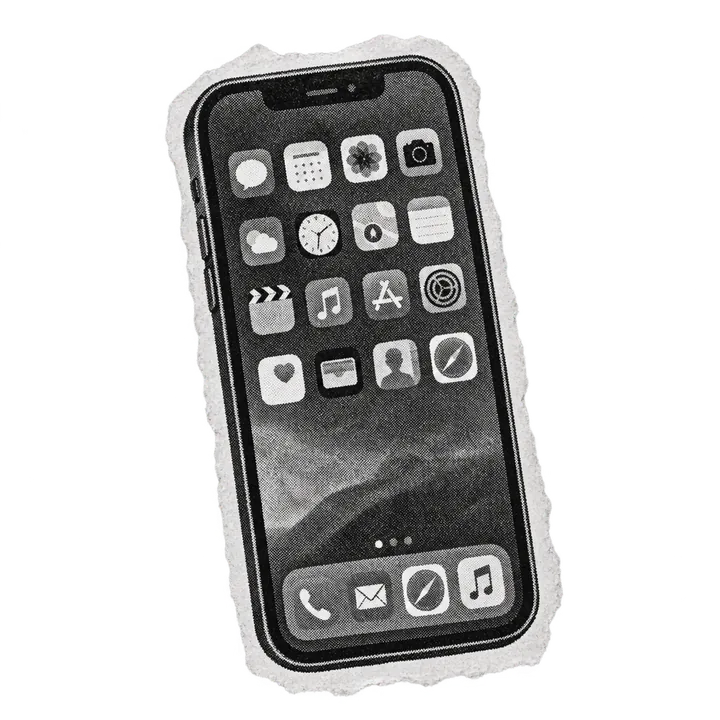

WL-000 / ARCHIVIO DEL FUTURO
Il futuro non si guarda. Si crea.
Ogni settimana apro l'archivio dell'AI: cosa esce, cosa funziona, come usarlo. Anche se non sei tecnico.
Signal/Built/Tested/Made/Carosello/Bollettino/
//////
Ogni settimana metto alla prova i nuovi tool di AI. E archivio solo quello che funziona davvero. Così tu non perdi tempo. E nemmeno soldi.
Primi reperti in archivio
Il lancio, domenica 11 ottobre 2026: un manifesto, un glossario e il metodo dello studio.


Una settimana in archivio
Cinque formati, sempre gli stessi giorni. Così sai cosa aspettarti.
- Lun Signal La notizia AI della settimana: cosa è successo davvero, con fonte e data, e cosa cambia per te.
- Mer Built / Tested Costruisco qualcosa con l'AI o la metto alla prova. Alla fine c'è sempre un verdetto onesto.
- Ven Made Spot e prodotti immaginati con l'AI. Sono concept, e lo dichiaro sempre.
- Sab Carosello Schede da salvare: glossari, confronti e procedure da rileggere quando servono.
- Dom Bollettino Il Bollettino dell'Archivio: le news della settimana in un carosello, ognuna con la sua fonte.
L'ARCHIVIO / FASCICOLI GRATUITI
Ogni reperto ha il suo fascicolo.
Il materiale completo dietro al contenuto: prompt, procedure, schede. Gratis, in PDF.
- Guarda il repertosu Instagram
- Commenta la parolaindicata nel post
- Ricevi il fascicoloin privato, una volta sola
16 parole dell'AI, spiegate senza gergo
Le 8 del carosello più LLM, finestra di contesto, fine-tuning, embedding, modelli aperti, temperatura, MCP e vibe coding.
Parola: GLOSSARIO
Pronto
Le 4 stazioni dello studio
Lo schema con cui nasce ogni reel: lo strumento di ogni stazione, la sua regola e il prompt da copiare.
Parola: WORKFLOW
Pronto
Come nasce un reperto.
Quattro stazioni. L'AI esegue, le scelte restano umane: argomento, tono e approvazione finale non si delegano.
-
01
Ricerca
Claude, con ricerca web
Tutto ciò che non ha una fonte primaria, una data e un link si scarta.
-
02
Testo
Claude
Sempre la stessa struttura: aggancio, fatto, verdetto. È la struttura a rendere veloce la scrittura.
-
03
Voce
Higgsfield
La mia voce, generata da un campione che ho registrato io. Tre versioni, resta quella senza esitazioni.
-
04
Montaggio
Whisper e HyperFrames
Ogni parola a schermo è agganciata alla voce. È il video che si adatta alla voce, non il contrario.
Le regole dell'archivio
- Ogni dato ha una fonte, con la sua data. Oppure viene da un test che ho fatto io.
- Notizie, ipotesi e opinioni restano separate. Sempre.
- I prodotti e gli spot immaginari sono dichiarati come concept.
- Il timbro "verificato" va solo su ciò che ho provato davvero.

Il reperto zero sono io.
Sono un full-stack developer. Ho aperto WaweLab per portare l'AI anche a chi non scrive codice: provo i tool appena escono, li uso per lavori veri e archivio quello che resta.
Parlo in prima persona, con numeri veri e un verdetto alla fine. Se una cosa non vale i soldi, lo dico.
Anche questo sito è stato progettato e scritto con Claude, a partire dal sistema visivo dell'archivio.
Lo stesso metodo, per la tua attività.
I lavori dell'archivio diventano servizi. Si parte con pochi progetti, scelti con cura.
Spot prodotto con l'AI
Un video per il tuo prodotto, dall'idea al montaggio, senza set né troupe.

Sito vetrina
Un sito chiaro e veloce, progettato e scritto con l'AI.
Automazioni e agenti
Il lavoro ripetitivo che oggi fai a mano, affidato a un flusso su misura.